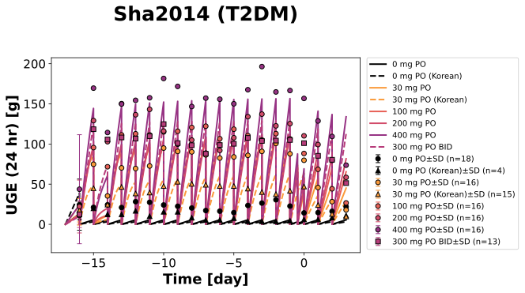
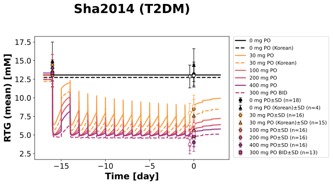

Overview
Models
| model | source |
|---|---|
| model | canagliflozin_body_flat.xml |
Datasets
Figures (2)




Code
"""Simulation experiment of the study Sha2014."""
from typing import ClassVar, NamedTuple, override
from pkpdsim.metadata import (
ApplicationForm,
Dosing,
Fasting,
Health,
PKPDMappingMetaData,
Route,
Tissue,
)
from sbmlsim import Q
from sbmlsim.data import DataSet
from sbmlsim.fit import FitData, FitMapping
from sbmlsim.plot import Axis, Figure, Plot
from sbmlsim.simulation import Change, Simulation
from sbmlsim.units import Quantity
from pkdb_models.models.canagliflozin import MODEL
from pkdb_models.models.canagliflozin.experiments.base_experiment import (
CanagliflozinSimulationExperiment,
)
class Group(NamedTuple):
"""A group of Sha2014 (Table 1, the 24-hr mean PG of day 16 Table 3)."""
dose: int # [mg]
bid: bool # twice daily
korean: bool
bodyweight: float # [kg]
fpg: float # fasting plasma glucose of day -1 [mM]
gfr: float # eGFR [ml/min/1.73 m^2]
mpg: float # 24-hr mean plasma glucose of day -1 [mM]
mpg_d16: float # 24-hr mean plasma glucose of day 16 [mM]
class Sha2014(CanagliflozinSimulationExperiment):
"""Simulation experiment of Sha2014.
Patients with type 2 diabetes (antihyperglycemic agents stopped 16 days
before), an oral suspension once daily (30 - 400 mg) or 300 mg twice daily
or placebo on day 1 and on days 3 - 16, the morning dose between 8 and 9
AM after an overnight fast with the breakfast within 10 min, the evening
dose between 6 and 7 PM; Western patients (US, Germany) and Korean
patients (30 mg and placebo). The 24-hr urinary glucose (UGE) of every day
from day -1 (placebo) to day 19, the 24-hr mean renal threshold of glucose
(RTG) of day -1 and day 16 (Table 2) and the mean RTG of the daytime
(0 - 13 hr) and the overnight (13 - 24 hr) of day 16 of the Western
patients (Fig 4). The pharmacokinetics were not reported (bioanalytical
data manipulation).
The simulation starts with day -1 (the first dose is at 24 hr) and is
shifted so that the end of day 16 is 0 day: the 24-hr urine of day d ends
at d - 16 day (day -1 at -16 day).
"""
groups: ClassVar[dict[str, Group]] = {
"PBO": Group(0, False, False, 94.2, 11.2, 98.8, 12.4, 11.4),
"PBO_K": Group(0, False, True, 75.5, 10.7, 77.5, 14.5, 11.0),
"CAN30": Group(30, False, False, 88.9, 11.1, 96.9, 12.4, 11.2),
"CAN30_K": Group(30, False, True, 66.2, 9.9, 77.8, 13.2, 9.9),
"CAN100": Group(100, False, False, 87.8, 10.3, 102.4, 11.8, 9.2),
"CAN200": Group(200, False, False, 92.2, 11.2, 92.0, 12.3, 9.1),
"CAN400": Group(400, False, False, 92.7, 11.6, 104.1, 13.4, 9.8),
"CAN300_BID": Group(300, True, False, 94.8, 10.3, 103.6, 11.4, 8.4),
}
#: the first dose (day 1) after day -1 [hr]
time_first = 24
#: the doses of day 1 and of days 3 - 16 [hr]
times_dose: ClassVar[list[int]] = [24] + [72 + 24 * k for k in range(14)]
#: the evening dose of the twice daily dose after the morning dose (6 - 7 PM
#: after 8 - 9 AM) [hr]
time_evening = 10
#: the start of the overnight interval of the RTG of day 16 (Fig 4) [hr]
time_overnight = 24 * 16 + 13
#: the end of day 16
time_shift = 24 * 17
#: the end of day 19
end = 24 * 20
@override
def datasets(self) -> dict[str, DataSet]:
dsets = {}
for fig_id in ["Fig2", "Fig4", "Tab2A"]:
df = self.load_dataframe(fig_id)
for label, df_label in df.groupby("label"):
dsets[str(label)] = DataSet.from_df(df_label, self.ureg)
return dsets
@staticmethod
def key(group: str) -> str:
"""Get the key of the simulation of a group."""
return f"po_{group.lower()}"
@staticmethod
def resets() -> dict[str, Quantity]:
"""Get the changes at the start of a collection of urine (UGE and RTG)."""
return {
"KI__glc_urine": Q(0, "mmole"),
"KI__RTG_int": Q(0, "mM*min"),
"KI__RTG_time": Q(0, "min"),
}
@override
def simulations(self) -> dict[str, Simulation]:
tcsims = {}
for name, group in self.groups.items():
# the changes by time: the dose, the start of the 24-hr urine of
# every day and of the RTG intervals of day 16
changes: dict[float, dict[str, Quantity]] = {}
dose_times = list(self.times_dose)
if group.bid:
dose_times += [t + self.time_evening for t in self.times_dose]
resets = list(range(24, self.end, 24))
if not group.korean:
resets.append(self.time_overnight)
for t in resets:
changes.setdefault(t, {}).update(self.resets())
# the filtered glucose is the 24-hr mean plasma glucose of day -1
# before and of day 16 after the first dose; the FPG of day -1
# (the shift of the RTG in diabetes) is kept
changes[self.time_first]["KI__PG_delta"] = Q(
group.mpg_d16 - group.fpg, "mM"
)
tcsims[self.key(name)] = Simulation(
time_unit="hr",
end=self.end,
preinit_changes={
**self.default_changes(),
"BW": Q(group.bodyweight, "kg"),
"[KI__fpg]": Q(group.fpg, "mM"),
"KI__PG_delta": Q(group.mpg - group.fpg, "mM"),
"KI__f_renal_function": Q(group.gfr / 101, "dimensionless"),
},
changes=[
*(Change(t, values) for t, values in sorted(changes.items())),
self.add_doses(
sorted(dose_times), {"PODOSE_can": Q(group.dose, "mg")}
),
],
time_shift=-self.time_shift,
)
return tcsims
@override
def fit_mappings(self) -> dict[str, FitMapping]:
mappings = {}
for name, group in self.groups.items():
# the 24-hr UGE of every day; the 24-hr mean RTG of day -1; the
# mean RTG of day 16 of the daytime and the overnight (Western
# patients, Fig 4) or the 24-hr mean (Korean patients, Table 2)
observables = {
"uge": ("glucose_cumulative_amount", "KI__UGE", Tissue.URINE),
"rtg_baseline": (
"glucose_renal_threshold_baseline",
"KI__RTG_mean",
Tissue.PLASMA,
),
}
if group.korean:
observables["rtg_d16"] = (
"glucose_renal_threshold_d16",
"KI__RTG_mean",
Tissue.PLASMA,
)
else:
observables["rtg_intervals"] = (
"glucose_renal_threshold_intervals",
"KI__RTG_mean",
Tissue.PLASMA,
)
for key, (dataset, sid, tissue) in observables.items():
mappings[f"fm_{name.lower()}_{key}"] = FitMapping(
self,
reference=FitData(
self,
dataset=f"{dataset}_{name}",
xid="time",
yid="mean",
yid_sd="mean_sd",
count="count",
),
observable=FitData(
self, task=f"task_{self.key(name)}", xid="time", yid=sid
),
metadata=PKPDMappingMetaData(
tissue=tissue,
route=Route.PO,
application_form=ApplicationForm.SUSPENSION,
dosing=Dosing.MULTIPLE,
health=Health.T2DM,
fasting=Fasting.FASTED,
),
)
return mappings
@override
def figures(self) -> dict[str, Figure]:
return {**self.figure_uge(), **self.figure_rtg()}
def label(self, name: str) -> str:
"""Get the label of a group."""
group = self.groups[name]
label = f"{group.dose} mg PO"
if group.bid:
label += " BID"
if group.korean:
label += " (Korean)"
return label
def style(self, name: str) -> dict[str, str]:
"""Get the style of the simulation and the data of a group."""
group = self.groups[name]
return {
"color": self.dose_colors[group.dose],
"linestyle": "--" if group.korean or group.bid else "-",
"marker": "^" if group.korean else "s" if group.bid else "o",
}
def add_simulations(self, plot: Plot, sid: str) -> None:
"""Add the simulations of all groups to a plot."""
for name in self.groups:
style = self.style(name)
plot.add_data(
task=f"task_{self.key(name)}",
xid="time",
yid=sid,
label=self.label(name),
color=style["color"],
linestyle=style["linestyle"],
)
def add_dataset(
self,
plot: Plot,
name: str,
dataset: str,
legend: bool = True,
filled: bool = True,
) -> None:
"""Add a dataset of a group to a plot.
Args:
plot: the plot.
name: the group.
dataset: the prefix of the dataset.
legend: the data has an entry in the legend.
filled: filled markers, else open ones.
"""
style = self.style(name)
plot.add_data(
dataset=f"{dataset}_{name}",
xid="time",
yid="mean",
yid_sd="mean_sd",
count="count",
label=self.label(name) if legend else None,
color=style["color"],
marker=style["marker"],
markerfacecolor=style["color"] if filled else "white",
markeredgecolor="black" if filled else style["color"],
linestyle="",
)
def figure_uge(self) -> dict[str, Figure]:
"""24-hr urinary glucose excretion of every day."""
fig = Figure(
experiment=self,
sid="Fig_uge",
name=f"{self.__class__.__name__} (T2DM)",
)
# the legends inside the panel cover data
fig.settings = {**fig.settings, "legend_position": "outside"}
plots = fig.create_plots(xaxis=Axis(self.label_time, unit="day"), legend=True)
plots[0].set_yaxis(f"{self.label_uge} (24 hr)", unit=self.unit_uge)
self.add_simulations(plots[0], "KI__UGE")
for name in self.groups:
self.add_dataset(plots[0], name, "glucose_cumulative_amount")
return self.figures_by_sid(fig)
def figure_rtg(self) -> dict[str, Figure]:
"""Mean renal threshold of glucose of the collection intervals.
The 24-hr mean of day -1 and of day 16 (Table 2), the daytime and the
overnight of day 16 (Fig 4, Western patients, open symbols). The 24-hr
mean of day 16 of the Western patients is the mean of the intervals of
the same patients (not mapped).
"""
fig = Figure(
experiment=self,
sid="Fig_rtg",
name=f"{self.__class__.__name__} (T2DM)",
)
# the legends inside the panel cover data
fig.settings = {**fig.settings, "legend_position": "outside"}
plots = fig.create_plots(xaxis=Axis(self.label_time, unit="day"), legend=True)
plots[0].set_yaxis(self.label_rtg_mean, unit=self.unit_rtg)
self.add_simulations(plots[0], "KI__RTG_mean")
for name, group in self.groups.items():
self.add_dataset(plots[0], name, "glucose_renal_threshold_baseline")
self.add_dataset(
plots[0], name, "glucose_renal_threshold_d16", legend=False
)
if not group.korean:
self.add_dataset(
plots[0],
name,
"glucose_renal_threshold_intervals",
legend=False,
filled=False,
)
return self.figures_by_sid(fig)
if __name__ == "__main__":
MODEL.run_experiments(Sha2014, output_dir=Sha2014.__name__)